PRIMII DOI SATELIŢI ARTIFICIALI AI PĂMÂNTULUI
PE MÂRCILE POŞTALE ROMÂNEŞTI
Victor Manta, PWO
Introducere
În tinereţea mea, aflat fiind în România, am devenit încetul cu încetul un colecţionar pasionat al tematicii foarte populare "Cucerirea cosmosului". Motivul regretabil pentru care am renunţat să colecţionez aceasta tematică este expus pe pagina "Coliţele frustrării mele, după 40 de ani", precum şi în publicaţia "philatelica.ro", Anul VI. nr. 4 (33) - iulie - august 2014. Se vede însă ca "Lumina stinsului amor Ne urmăreşte încă" (M. Eminescu, La steaua) se referă şi la filatelie.
Pe linia celor de mai sus, în timp ce pregateam un articol despre foarte interesanta emisiune a Poştei Române dedicate Expoziţiei Universale de la Bruxelles, 1958, a trebuit să mă aplec mai profund şi asupra emisiunii Sateliţii artificiali ai Pământului 1957, care reprezintă suportul fizic al celei dintâi, aceasta pentru a înţelege felul în care a fost ea "construită". Surprizele nu au întârziat să apară, lucru cu care filatelia vremurilor comuniste, şi nu numai ea, nu a încetat să ne gratifice, drept care scurta introducere pe care o plănuiam la început s-a transformat, încetul cu încetul, într-un articol de sine stătător.
Lansarea lui Sputnik I + II şi emisiunile filatelice sovietice
Primul satelit artificial al Pământului a fost lansat de URSS în ziua de 4 octombrie 1957. El a fost celebrat de către ţara care l-a lansat printr-o marcă emisă pe 5 noiembrie 1957 (deci dupa o lună), într-un tiraj obişnuit pentru o asemenea ţară, de 3 milioane de exemplare (catalog Michel, No. 2017).

Poşta sovietică, prin prisma intereselor ei financiare, nu i-a uitat însă nici pe filatelişti, "lansând" pe 28 noiembrie 1957 o marcă cu un supratipar imprimat peste o alta, ce fusese dedicată savantului rus Ţiolkovski. Michel 2026, tiraj de doar 115 000 buc. Desigur că cotele de catalog actuale reflectă acest tiraj redus. Marca originală nesupratipărită a fost emisă pe 7 octombrie 1957, cu un tiraj de 2 milioane de exemplare.
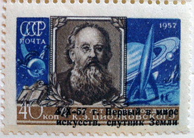
URSS l-a lansat pe succesorul lui Sputnik I, numit Sputnik II, după o lună, mai precis pe 3 noiembrie 1957. În interior se afla şi un câine, pe nume Laika, dispariţia tragică a căruia i-a întristat în mod special pe copiii vremii. Cu ocazia evenimentului Sputnik II poşta sovietică a pus în vânzare pe 30 decembrie 1957 (iarăşi după cam o lună) o serie de 4 valori. Mi 2041 A - 2045 A, tiraj 2 milioane, cu excepţia lui 2044 A, cu un tiraj de 5 milioane. Vă prezentăm mai jos una dintre mărcile acestei serii.
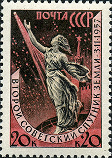
Observăm din aceste date că poştei sovietice i-au trebuit cam 4 săptămâni, scurse între producerea evenimentului şi emiterea mărcilor, pentru a lansa produsele filatelice respective.
Emisiunile de mărci româneşti Sputnik I şi II
Contextul geopolitic
Să trecem acum la ceea ce ne interesează de fapt, şi anume la emisiunea românească dedicată aceloraşi evenimente. Să ne amintim în prealabil că România a fost o ţară ocupată de trupele sovietice în perioada 1944 - 1958, şi s-a aflat sub control sovietic încă nişte ani "buni" după aceea, ceea ce explică ceea ce urmează. Sursa
Notă: celor care încă preferă termenul de „Eliberarea României de către glorioasa Armată Sovietică” le recomand pagina „Davai Ceas” de pe site-ul meu „Comunism pe mărcile poştale”.
Emisiunile „Sateliţii artificiali ai Pământului” şi „Laika”
Aşadar, ca o bună şi credincioasă aliată, şi ca o prietenă „de veacuri” a Uniunii Sovietice (ţară care, precum se spunea, se învecina cu cine vroia ea), România s-a grăbit să comemoreze şi ea filatelic, dintr-o singură lovitură, lansarea celor doi sateliţi. Zis şi făcut pe 6 noiembrie 1957, prin lansarea emisiunii „Sateliţii artificiali ai Pământului”, formate din două tripticuri, cu un nominal total de 8 lei, foarte înalt pentru acea vreme. Tirajul total a fost de 1 milion de tripticuri, un tiraj mare, dar nu neobişnuit pentru epocă. Mi. 1677 - 1680, Scott C49 - C52.
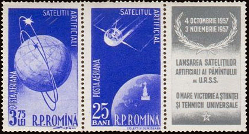
Motivul de ce România comemora pe mărcile ei un succes datorat unei alte naţiuni este explicitat în clar de propagandiştii comunişti chiar pe vinieta emisiunii: „O mare victorie a ştiinţei şi tehnicii universale”. Pentru a fi precişi, a fost un succes al doar două ţări, una fiind URSS, iar cealaltă, în mod postum, detestata şi învinsa Germanie nazistă, a cărei industrie de rachete, cea mai avansată a vremii, a fost demontată după al doilea război mondial şi apoi remontată în URSS de specialişti germani care au fost „convinşi” să lucreze în URSS pentru învingător. Aceasta explică şi de ce supremaţia sovietică în explorarea spaţiului cosmic a fost de o scurtă durată.
A urmat, aşa cum era de aşteptat din partea unui aliat credincios, emisiunea dedicată lui Sputnik II şi căţeluşei martire Laika, comemoraţi printr-o serie de două valori emise de Poşta Română pe 10 decembrie 1957, Mi. 1684 -1685. Tirajul a fost de 2 milioane de exemplare, pentru o emisiune de altfel foarte reuşită din punct de vedere estetic şi mult utilizată poştal, motive pentru care chiar şi nefilateliştii generaţiei mele îşi amintesc de ea cu o oarecare nostalgie.
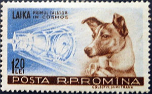
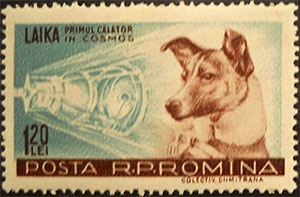
După aceste precizări şi explicaţii, daţi-mi voie să mă întreb, cu o bună doză de scepticism, cum de a fost posibil ca seria românească de tripticuri să fi fost emisă pe 6 noiembrie 1957, când satelitul Sputnik II a fost lansat la data de 3 noiembrie a aceluiaşi an, aşa cum se precizează şi pe vinietă? Adică sovieticilor le-a trebuit aproape o lună pentru ca să pregătească o serie şi să o emită, una referitoare la propriul lor satelit, iar "ai noştri" au reuşit aceeaşi ispravă în doar 2 zile, scoţând o complicată emisiune tipografiată, şi nu una supratipărită în grabă şi aruncată pe piaţă?
Deoarece ambele cataloage internaţionale, Scott şi Michel, dau aceeaşi dată de emisie, cea de 6 noiembrie (care de altfel nu este o zi oarecare, ci exact ajunul aşa zisei Mari Revoluţii Socialiste din Octombrie, marele festin comunist!), nu mi-a rămas decât să fac presupuneri, care însă nu m-au dus prea departe. Ideea că sovieticii le-ar fi comunicat din vreme tovarăşilor lor din România când va avea loc lansarea lui Sputnik II am respuns-o ca fiind absurdă, acesta fiind unul din cele mai bine păstrate secrete, ţinut ascuns pentru a ascunde eventuale nereuşite. Ce îmi pot imagina este că fie că tripticurile au apărut de fapt mai târziu, fiind doar raportate că ar fi apărut la data anunţată, fie că s-a lucrat nebuneşte timp de două zile şi nopţi, ceea ce pare puţin verosimil pentru a macheta şi imprima această emisiune destul de complicată din punct de vedere tehnic. Oricum ar fi, avem de a face, aşa cum scrie pe vinietă, cu încă „O mare victorie a ştiinţei şi tehnicii universale”...
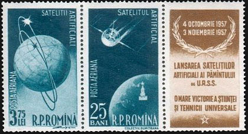
Vă prezint mai jos două piese memorabile ale modestului meu „patrimoniu” filatelic cu mărci poştale româneşti, şi anume două plicuri cu cele două emisiuni menţionate mai sus, pe care le-am dat la ştampilat pe 12 aprilie 1961, în ziua în care a fost lansat primul cosmonaut al lumii, Iurii Gagarin. Ştampilele, aplicate cu amabilitate de o funcţionară de la Oficiul poştal Bucureşti 30 (de pe strada Glinka, în Floreasca), apar şterse din cauza uzurii lor, oricât a încercat amabila doamnă de la ghişeu să le cureţe înainte de a le aplica pe mărcile mele preţioase. Desigur că totul reprezintă o „făcătură” filatelică, ce corespundea nivelului meu de atunci, la vârsta mea de 16 ani. Ca amintiri ale tinereţii mele, ele rămân însă pentru mine piese de nepreţuit. Ar fi de remarcat că pe acea vreme mărcile respective se vindeau încă la valoarea lor facială în comerţul filatelic de stat, motiv pentru care am folosit piese din colecţia mea, pe care am putut să le înlocuiesc ulterior la acelaşi preţ.
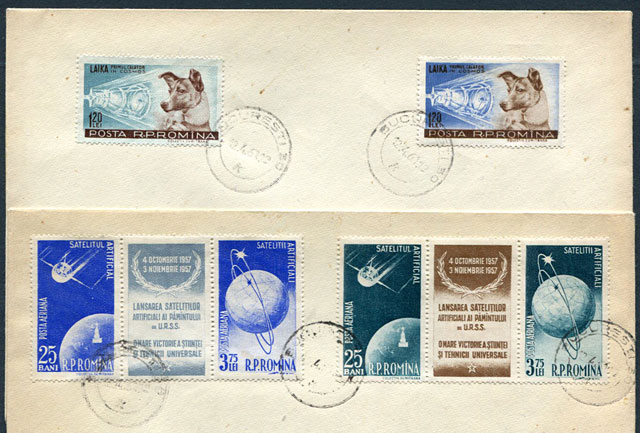
Mapping-ul tripticurilor
Am compilat, pe bază datelor din catalogul Michel, o mică tabelă care arată aşezarea în coală a diverselor tripticuri, drepte şi ranversate, cărora le-am alăturat un mijloc de identificare a poziţiilor, de tip notaţie şahistă. Am marcat printr-un fond colorat în diverse culori (câte una pe triptic) dreptunghiul central (A4 – A6 – I6 – I4) care conţine tripticurile ranversate.
Pentru a clarifica această tabelă vă prezint şi imaginile a două coli complete neuzate, imagini pe care le puteţi mări clicând pe ele. Ele vă vor servi eventual pentru a putea urmări cele prezentate în articolul ce va urma despre aceleaşi tripticuri, supratipărite pentru emisiunea Expoziţia de la Bruxelles din 1958.
Vă rog să observaţi cât de mult diferă, în lărgime şi ca perforaţii, marginile celor două coli, ceea ce invită la o atenţie sporită atunci când se încearcă găsirea poziţiilor pe coală a unor tripticuri date.
Închei prin a arăta amatorilor un ştraif central complet, tête-bêche, obliterat de complezenţă, pe care eu l-aş plasa pe rândurile 6 şi 7 în notaţia mea, chiar dacă perforaţiile marginilor de coală nu se potrivesc între ştraif şi coala completă. Filateliştii epocii au observat, desigur, numărul important de varietăţi care puteau fi extrase din coala de tipar, precum tripticuri cu vinieta plasata în trei poziţii diferite şi, mai interesant chiar, perechi verticale de tripticuri tête-bêche, al căror număr este redus în raport cu numărul total al tripticurilor. Să ţinem seama şi de faptul că o mare cantitate de mărci ale acestei emisiuni a fost ştampilată de complezenţă şi/sau folosită, lucru de lăudat, în scopuri poştale.
Observăm că marginile de coală apar mai sus fără benzi de culoare. Se cunosc însă multe cazuri de margini de coală cu benzi late de culoare plină, plasate pe laturile lungi ale colilor. Un articol publicat aici sugerează ca ar fi folosiţi cilindri diferiţi, care erau înlocuiţi pe măsură ce cei vechi se uzau. Acest lucru pare verosimil, având în vedere faptul că au fost imprimate un milion de exemplare ale acestei emisiuni.
Filigrane
Catalogul Michel 2014 online menţionează folosirea unei hârtii cu un singur tip de filigran, cel cu Nr. 10. Catalogul Scott 2013 nu menţionează nici un filigran, deşi mărcile de dinainte şi de după această emisiune sunt menţionate ca fiind cu filigran. Spre deosebire de aceste cataloage moderne, Catalogul Mărcilor Poştale Româneşti din 1974 menţionează în mod corect două tipuri de filigrane, prezentate în imaginile de mai jos.
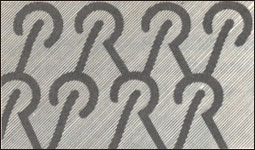
Ambele filigrane, apărute în anul 1957, au şi alte caracteristici comune, precum culoarea lor, mai închisă decât a hârtiei, literele legate între ele, dispunerea literelor în diagonală, înălţimea de 13 mm a acestora şi apariţia lor în 8 poziţii.
Cunoscutul blogger filatelic, Dl. Cornelius Ionescu, este cel care mi-a trimis imaginile filigranelor şi mi-a semnalat folosirea efectivă a amândorura pe tripticurile pe care le deţine în colecţia sa personală. Îi mulţumesc şi pe această cale pentru informaţia furnizată. Mai jos puteţi vedea un exemplu de folosire a filigranului nr. XVII. Un alt exemplu de folosire a a filigranului nr. XVIII va apare pe pagina dedicată Sateliţilor artificiali ai Pământului, supratipăriţi pentru expoziţia din Bruxelles din 1958.
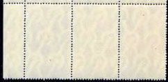
Eseuri
Tot d-lui C. Ionescu îi datorez şi imaginire eseurilor de culoare reproduse mai jos.
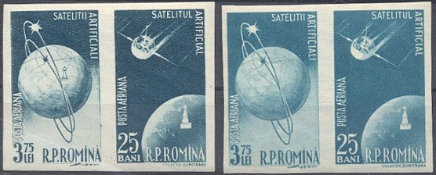
Ele au apărut pe piaţă după 1990, fără viniete, fiind probabil bine "dosite" până atunci. Sursa . Constatăm că cele două zile teoretice care au stat la dispoziţie pentru a se macheta şi emite mărcile respective, au reprezentat un timp suficient până şi pentru realizarea unor eseuri de culoare...
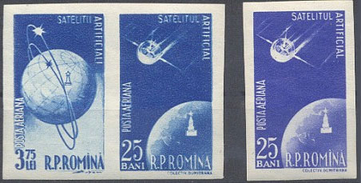
În viitorul articol vom vorbi, aşa cum am anunţat deja, despre isprava emiterii (întârziate) a versiunii supratipărite, dedicate comemorării Expoziţiei Universale de la Buxelles din 1958.
USA, Switzerland, April 2014 - January 2015
Completare
Prezentul articol a apărut şi în Nr. 6 (35) - noiembrie-decembrie 2014 al revistei tipărite Philatelica. ro, revistă pe care am primit-o recent. Am constatat cu plăcere că dl. Dan Dobrescu, editorul-fondator al revistei, a publicat pe pagina 47 a aceluiaşi număr "Precizări privind emisiunea Lansarea sateliţilor artificiali ai Pământului". Dânsul a folosit "... o serie de documente aflate în arhiva fostului Muzeu Naţional Filatelic" şi prezintă colile cu Bun de tipar, precizând că acesta a fost dat pe 5 noiembrie 1957. Reproducem mai jos imaginile celor două coli, publicate de dl. Dobrescu. Le găsiţi şi online aici.
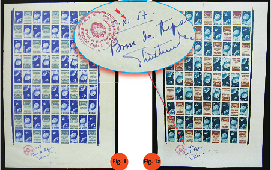
Mai aflăm de la dl. Dobrescu că machetatorul valorii de 3,75 lei a fost Dimitrie Ştiubei, lucru imposibil de descifrat de pe marca respectivă, spre deosebite de "Colectiv Dumitrana", semnătură extrem de vizibilă pe marca de 0,25 lei.
Din păcate nici aceste precizări nu lămuresc misterele legate de data de emitere a acestei serii. Deoarece Al doilea satelit artificial al Pământului a fost lansat pe 3 noiembrie 1957, dată precizată şi pe vinietă, nu vedem cum a fost omeneşte posibil ca bunul de tipar să fi fost dat deja pe 5 noiembrie 1957, adică după doar două zile scurse de la lansarea satelitului . Precizăm din nou că este vorba de o emisiune destul de complicată din punct de vedere tehnic, cu trei rânduri întoarse pe coală. Ştim în plus şi că au fost făcute în prealabil încercări de culori, care au fost prezentate şi în acest articol, şi în cel al dlui. Dobrescu. Realizarea modelarului de culori şi luarea deciziilor a cerut, desigur, ceva timp.
Intrigă de asemeni faptul că un colectiv cunoscut (Dumitrana) n-a fost solicitat să macheteze ambele mărci, apelându-se la un alt machetator (Dimitrie Ştiubei) pentru a două valoare din serie...
Toate acestea ne duc la ideea că suntem în faţa unei manipulări, izvorâte din decizia politică a emiterii mărcilor în pre-ziua aniversării a 40 de ani scurşi de la aşa zisa Marea revoluţie socialistă din octombrie. Ipoteza noastră de lucru este că iniţial a fost planificată celebrarea lansării lui Sputnik I, motiv pentru care pe valoarea de 0,25 lei, cea machetată de Colectivul Dumitrana, apare textul "Satelitul artificial". Data emiterii a fost stabilită să fie fatidica zi de 6 noiembrie 1957 şi s-a început lucrul din vreme pentru aceasta. Nu este exclus ca formatul prestabilit să fi fost acelaşi cu cel final, doar că folosind o altă imagine (cu Lenin?) pentru marca de 3,75 lei şi un alt text pentru vinietă.
Lansarea lui Sputnik II cu trei zile înaintea punerii în circulaţie a emisiunii ipotetice româneşti Sputnik I a dat planurile peste cap, drept care au fost decise în grabă schimbările şi adăugirile cunoscute, machetatorul D. Ştiubei (fiind mai liber în acea perioadă?) primind sarcina să realizeze macheta valoarii de 3,75 lei. S-a facut ce s-a putut face şi cândva (când?) emisiunea a fost pusă pe piaţă. În aceste condiţii "bunul de tipar" de pe coliţele prezentate nu putea decât să fie antedatat, o minciună relativ minoră în raport cu atâtea altele, mult mai grave, din acea perioadă oribilă a istoriei României.

Published: Jan. 7, 2015. Revised: May 28, 2015. |